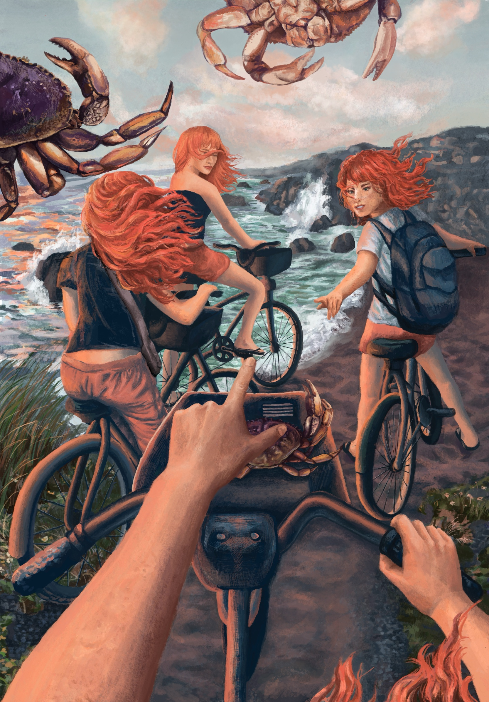
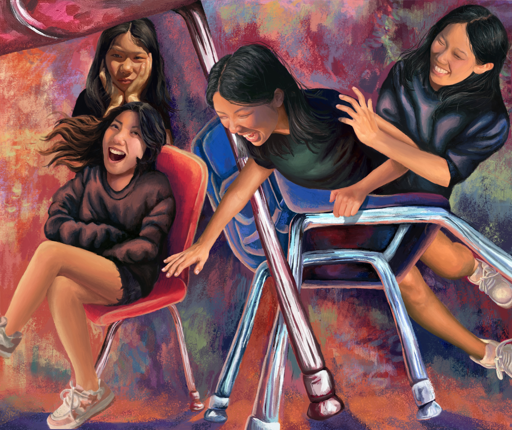
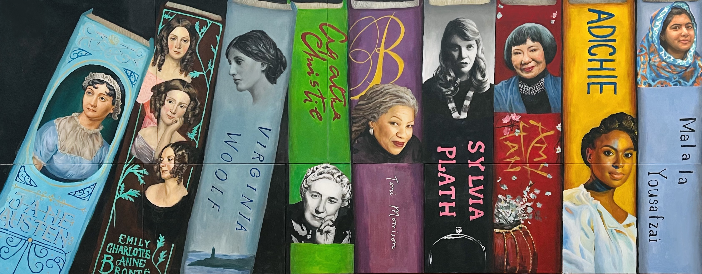
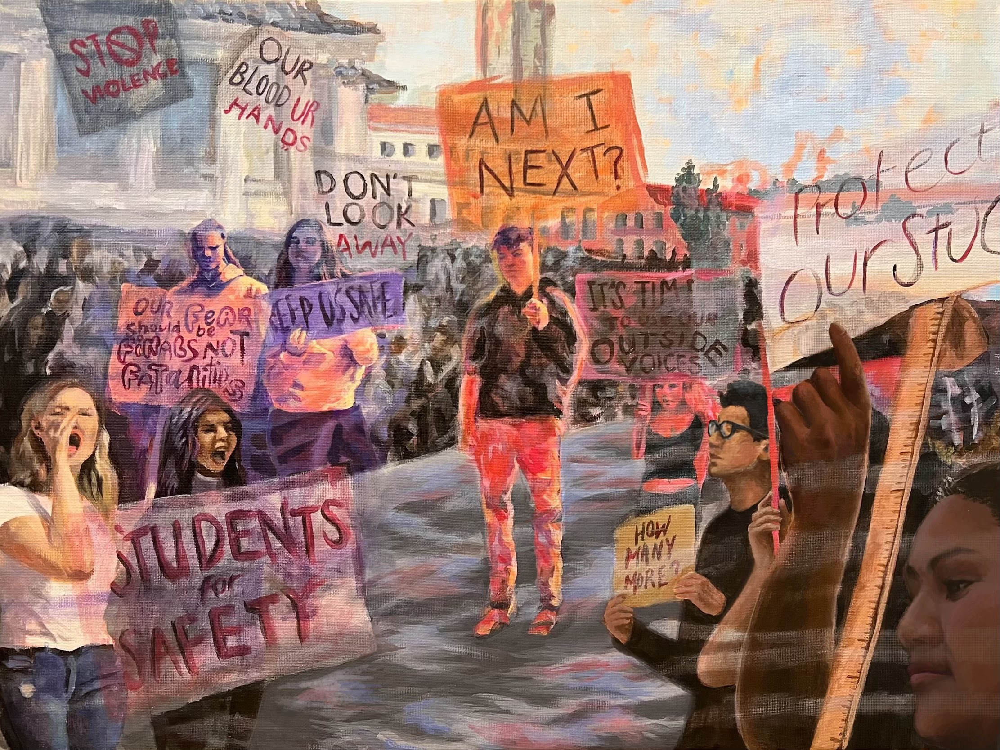
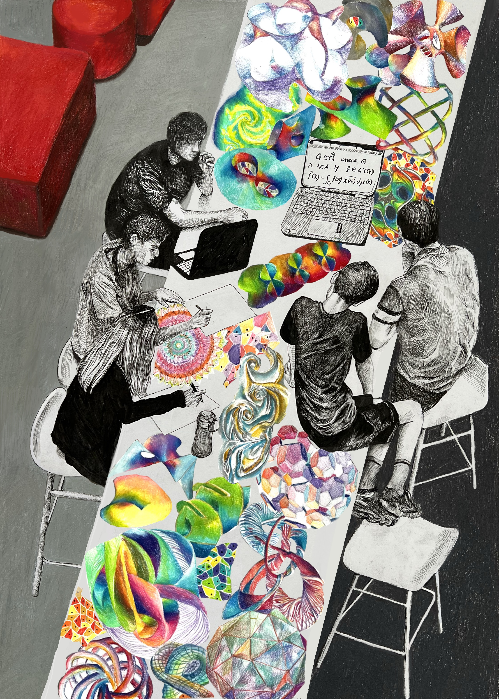
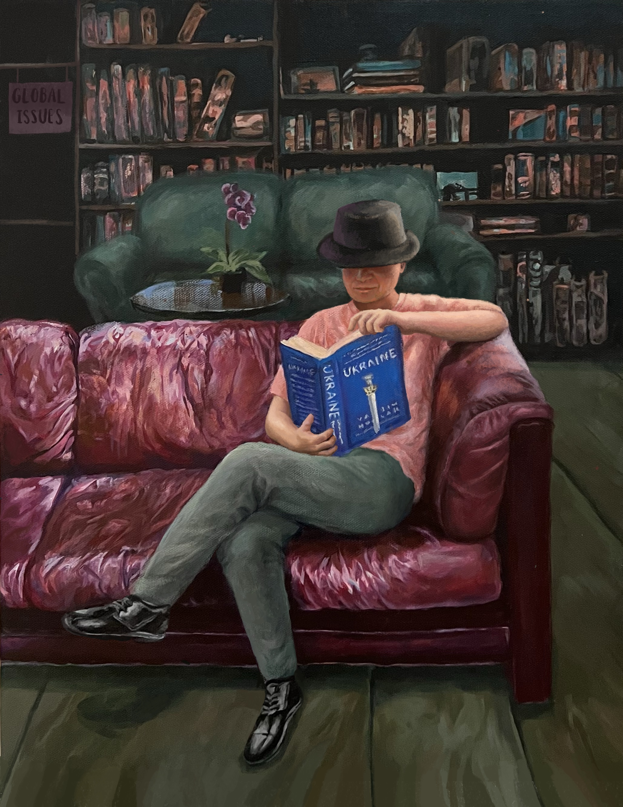
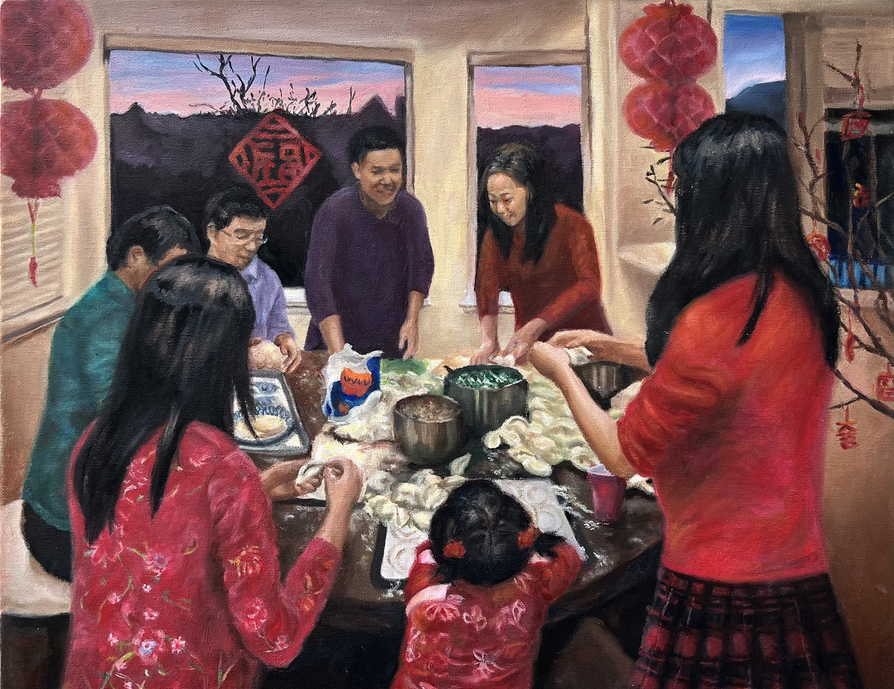
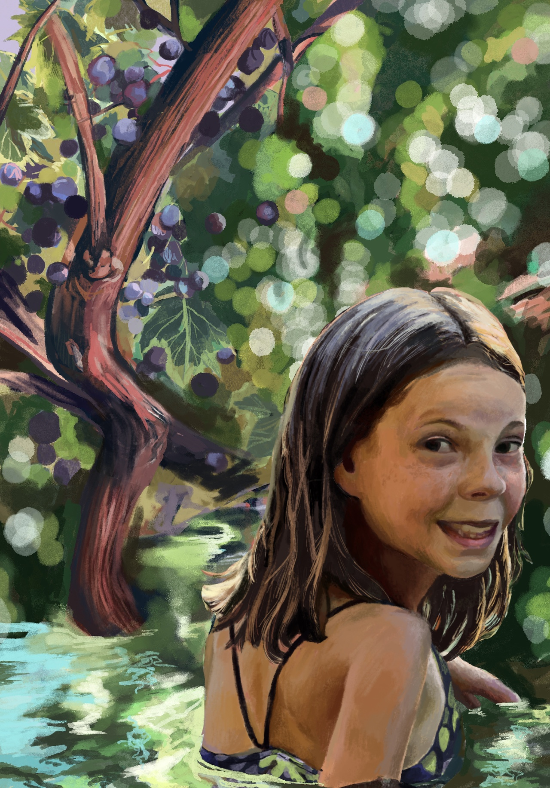
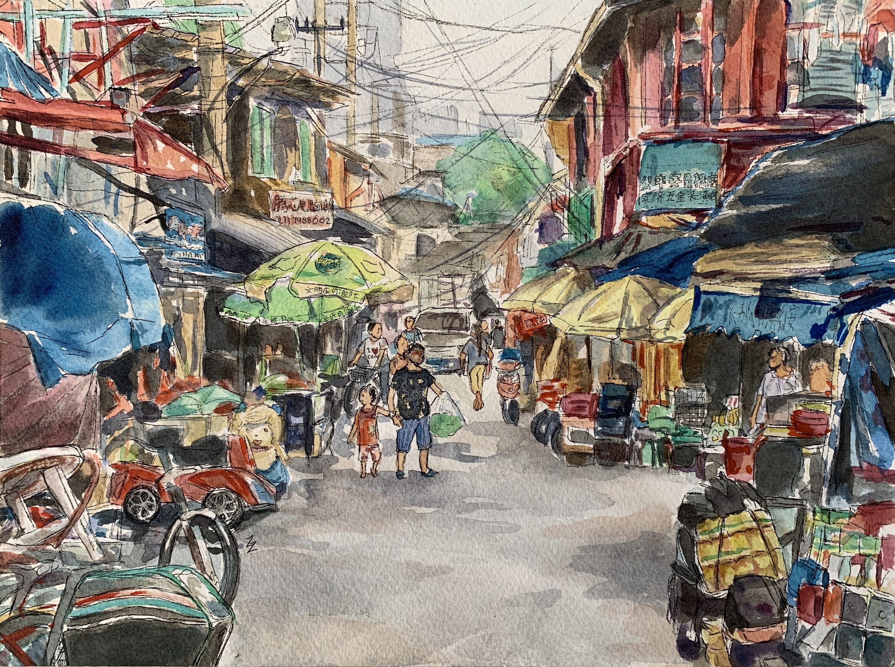
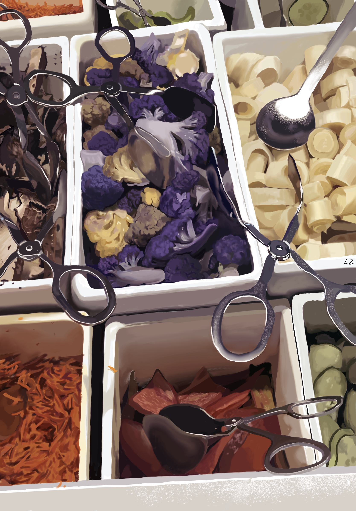

← back to the garage
Portfolio

Entrapment
Digital Art

Rescue
Digital Art

Musical Chairs
Digital Art

Women Who Write
Mural | Acrylic on Canvas

A Plea for Student Safety
Acrylic on Canvas

Unions and Intersections
Colored pencil, Micron Pen

Pages Unturned
Acrylic on Canvas

Lunar New Year's Eve
Oil on Canvas

Cornucopia
Digital Art

Alleyway in Shanghai
Watercolor

Niceties
Digital Art